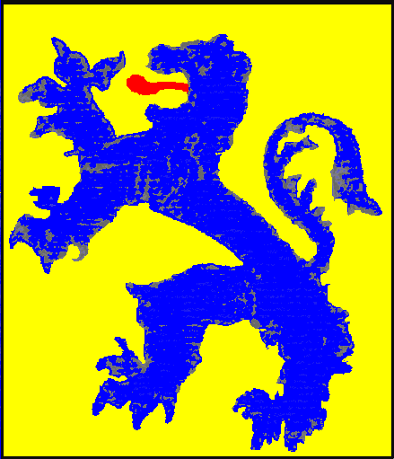

retour à la famille Campion

DOSSIERS DE LA BIBLIOTHÈQUE NATIONALE (3/5)
Joachim CAMPION, seigneur de SAINT MARTIN de PERCY
Référence : 13 J 133, dossier de la Bibliothèque
Nationale, Chérin 44
Provenance : Archives Départementales de
Saint-Lô
D'or au lion d'azur au lambel de gueules
Généalogie (Les deux bordures colorées se trouvant à droite et en bas indiquent qu'un personnage a eu des enfants. Ses enfants sont dans une case ayant deux bordures se trouvant en haut et à gauche, et de la même couleur que celle du père)
|
feu noble homme JOACHIN CAMPION Seigneur et Patron de St Martin de Percy et Dam[ois]elle Catherine de Clinchanp sa femme sont rappellés dans le contrat de mariage de Guillaume leur fils du ... octobre 1615 (minutte originale) |
|
Noble homme GUILLAUME CAMPION S[ieu]r et Patron de St Martin de Percy, epousa par contrat passé sous seings privés le ... octobre 1615 Damoiselle Avoyé du Rosel fille ainée de Noble homme michel du Rozel S[ieu]r et patron de St Germain de Crion, du Verger et de la Ponteliere et de Dam[ois]elle Jeanne de la Riviere, par lequel contrat led[it] S[ieu]r du Rosel a promis de payer auxd[its] futurs la somme de 7600 [livres tournois] pour tout ce que lad[ite] D[emoise]lle pourroit esperer a cause de sesd[its] pere et mere, et en outre des habits selon le lieu d'ou elle part et le lieu ou elle irai. Contrat passé en presence et de l'avis de Noble homme Mons[eigneu]r M[aitr]e Claude du Rosel, con[seille]r du Roy an sa cour de Parlement de Rouen ; de noble homme Raoul Gervaise, S[ieu]r de Longueville, oncle et tuteur dud[it] futur, de noble homme Jean Campion S[ieu]r d'aubigny et dufou, andré Campion E[cuye]r S[ieu]r de la Loriere, Francois Mathurin et André dits Campion, E[cuye]rs S[ieur] de la hogue, et de la Carriere (minute originale) Guillaume de Campion, Escuyer, S[ieu]r de St Martin proprietaire de la Sergenterie noble et hereditalle de Moyon fit aveu au Roy en sa Chambre des Comptes (de) Normandie le 26 mars 1672 pour raison de lad[ite] sergenterie noble et hereditalle de Moyon qui est un quart de fief de haubert, laquelle s'etend es parroisses d'angy, St Sauveur Bonfossé et autres, et par lui acquise de Jean Gervaise, Ecuyer, S[ieu]r de Bricqueville par acte du 25 [novem]bre 1629 et relevant de sa majesté a cause de sa vicomté de Coustances, cet aveu signé Campion et scellé du sceau de ses armes (perdu en partie) et ensuite collationné sur semblable aveu demeuré en lad[ite] Chambre des Comptes par le Conseiller auditeur le 27 mars 1602, signé Le Gendre (original en parchemin) Guillaume de Campion, Escuier,
Seigneur et Patron de St Martin et de St Jean de Percy,
assista aux articles de mariage de Charles, son fils et de
deffunte Damoiselle Advouée de Rosel, du jeudy 11
[novem]bre 1660 (grosse) feu Guillaume de Campion, Escuyer, S[ieu]r de St Martin est rappellé dans la declaration des biens faite par son fils ainé a ses freres le 1er may 1667 (original) feu Guillaume de Campion, Esc[uye]r S[ieu]r et Patron en sa partie des Eglises de St Jean et St Martin de Percy, est rappellé dans les lots et partages de ses biens faits entre ses enfans le 6 avril 1668 (original) |
|
PIERRE CAMPION, Escuier S[ieu]r de Campion fils de Guillaume Campion, Ecuyer, S[ieu]r de St Martin, obtint le 27 avril 1679 un certificat du S[ieu]r de Canisy mestre de camp du Regiment de Basse Normandie, portant que led[it] Campion etoit Enseigne(?) Dans la compagnie du S[ieu]r de ??, qu'il avoit sorti et etoit actuellement dans sond[it] regiment, datte de Villedieu, signé Canisy (orig[ina]l) Pierre Campion, Escuyer, S[ieu]r du Lieu fit la declaration des biens de son pere a ses freres le 1er may 1667. Il partagea le 6 avril 1668. |
ETIENNE de
CAMPION S[ieu]r de St
Martin de Percy portant les armes en qualité de
soldat obtint le 13 may 1648 un certificat du S[ieu]r de la
??, Lieutenant de M. le Comte ?? Commandant a Calais,
portant qu'il etoit enrollé dans lad[ite] compagnie,
datté de Calais, signé ?? (orig[ina]l) Il partagea le 6 avril 1668. |
CHARLES de CAMPION, Escuier, S[ieu]r des Deserts, fils et presomptif heritier, epousa par articles passés sous seing privé a Coustances le Jeudy 11 novembre 1660, et reconnus le Lundy 7 fevrier 1661 devant Richard Corbet et Charles Maudouge Tabellion Royaux aud[it] lieu Damoiselle Marie le Gros, fille et seule heritiere de deffunt Maistre Nicolas le Gros, Conseiller du Roy au Bailliage et siege Presidial de Costentin a Coustances et de Damoiselle Judieth Brohan, assistés Savoir le futur de son pere et la future de la d[ite] D[amoisell]e sa mere, par lesquels led[it] futur epoux prit lad[ite] D[amoise]lle avec les biens qu'elle pouvoit avoir tant en meubles qu'immeubles de la succession dud[it] feu S[ieu]r le Gros, son pere, au nombre desquels etoit l'office de Conseiller du Roy aud[it] siege que led[it] defunt possedoit auquel led[it] futur, auparavant la celebration dud[it] mariage se feroit recevoir, et sond[it] pere lui a delaissé en attendant sa succession l'usufruit de l'exercice de la Sergenterie de Moyon, ces articles passés en présence de Maitre Pierre Marion, M[aitr]e Hillaire Camus, Pretre Jean Dairon, S[ieu]r du val Dairon, advocat, M[aitr]e antoine guerin, advocat et Gervais aubert S[ieu]r de la ?? et autres. (grosse en papier signée desd[its] notaires). M[aitr]e Charles de Campion Escuyer, S[ieu]r des Deserts, Con[seill]er du Roy au Bailliage et Siege Presidial de Costentin, reçu la declaration qui lui fut fournie par pierre son frere ainé le 1er may 1667 des immeubles a eux delaissés par la mort de leur pere, pour en faire trois lots et ensuite procede a la choisie d iceux par lesd[its] Pierre, Etienne et Guillaume ; lesquels immeubles consistoient dans la terre de St Martin, avec le droit de Patronnage et autres droits honorifiques, la sergenterie noble de Moyon, dependant de la Vicomté de Coustances, le Moulin Girard, affermé a Guillaume Meslin, situé en la parroisse de Chifrevas, la terre de la Gollerie, située en la parroisse de Percy, la terre du village au Breton, située en la même Parroisse, la terre de la Pointerie, située au même lieu, et un grand nombre de pieces de terres et rentes (original en papier signé de Campion et le maitre temoin). M[aitr]e Charles de Campion, Escuyer, sieur des Deserts, conseiller du Roy au Bailliage et siege Presidial de Costentin a Coustances, fourni a Pierre et Etienne ses freres le 6 avril 1668 les lots et partages de la succession de leur pere pour en faire le choix, ?? par actes passés le 12 du même mois devant Jacques Godard et Joachim Castel notaires en la Vicomté de Coustances, led[it] Pierre choisi le 1er lot consistant dans la terre de St Martin, avec le droit de Patronnage aux eglises de St Jean et St Martin de Percy et autres droits et dignités y appartenant, et differentes pieces de terre ; led[it] Etienne eut le second lot consistant en la terre de la Gollerie et differentes pieces de terre, et il demeura aud[it] Charles la terre et village au Breton, la sergenterie noble de Moyon et differentes pieces de terre (grosse en papier signée Godard l'un desd[its] notaires) Deffunts Charles de Campion, sieur du desert, Conseiller du Roy au Siege Presidial de Coustances et Damoiselle Marie le Gros, sa femme, sont rappellés dans les Lettres d'Emancipation de francois leur fils du 27 may 1685 (original) feus charles de Campion, S[ieu]r et patron de St Martin de Percy, Conseiller du Roy au Bailliage et Siege Presidial de Costentin et Damoiselle marie le Gros, sa femme, sont rappellés aux articles de Mariage de francois leur fils du 19 juin 1686 (grosse) Deffunts Charles de Campion, Escuier et damoiselle marie le Gros, son epouse, sont rappellés dans l'arrêt d'enregistrement des Lettres de main levée de la Garde noble de francois leur fils du 18 septembre 1696 (original) Feu Charles de Campion, Escuyer, est rappellé dans un aveu rendu par francois son fils du 14 avril 1698 (original) |
|
FRANCOIS de CAMPION agé de 18 ans, obtint en la Chancellerie de Rouen le 28 may 1685 des lettres de benefice d'age pour jouir de ses biens, sur l'exposé par lui fait qu'après le decès de ses pere et mere il avoit ete sous la tutelle de Pierre de Campion, S[ieu]r de St Martin (son oncle), que celui-ci etant mort, Charles du Rosel S[ieu]r de St Germain, fut elu en sa place, mais a cause du grand eloignement de ce dernier, D[amoise]lle Judith Brohon son ayeulle maternelle lui avoit ete substituée, et qu'elle etoit decedée le mesme mois de may. Ces lettres signees sur les reply, par le conseil le Bert, et Scellé (original en parchemin) francois Campion, Escuyer, S[ieu]r et Patron de St Martin de Percy, epousa par articles passés sous seings privés le Mercredy 19 juin 1686, et reconnus le 9 juillet suivant devant Nicolas Marie Notaire Gardemotte Royal en la Vicomté de Vire et Gilles Serard, sergent royal pris pour adjoint Noble Damoiselle Jeanne de la Gonivière, fille de M[aitr]e Michel de la Gonniviere, Escuyer S[ieu]r de St Martin Conseiller du Roy Lieutenant General Civil et Criminel au Bailliage de Thorigny et de Noble Dame Marie Madeleine de la Gonniviere, son epouse ; par lesquels articles lesd[it] S[ieu]r et D[am]e de St Martin promirent à la future epouse leur fille pour toute de telle part qu'elle pourroit pretendre en leur succession la somme de 16000 [livres tournois] ; ces articles passés en presence de Jean Pierre le Tellier, Ecuyer, S[ieu]r de la Canterye, oncle du futur, de M[aitr]e Jean et Jean Coignard pere et fils, Conseillers du Roy au Siege Presidial de Coustances, de claude Gislet du Pray, Escuyer, Seigneur de Pierreville, Conseiller du Roy, Premier President aud[it] Presidial de Costentin, francois de St Gilles, Seigneur de la Bloustiere, Jacques de la Goniviere, Escuyer, S[ieu]r de Breuilly(?), Jacques de la Goniviere, Escuyer, S[ieu]r de St Louet, et d'hervé de la Goniviere, chevalier, freres de la future et autres (grosse en parchemin signée dud[it] notaire) francois de Campion, Es[cuy]er S[ieu]r de St Martin et Dame Jeanne de la Gonniviere, son epouse, passerent un accord sous seings privés le 10 juillet 1687 avec Noble dame Madeleine de la Gonniviere, veuve de M[aitr]e Michel de la Gonniviere, Es[cuy]er S[ieu]r de St Martin, Conseiller su Roy, Lieutenant ancien civil et criminel de M. le Bailly de Caen au siege de Thorigny, mere de lad[ite] de Campion, et avec Jacques de la Gonniviere, Es[cuy]er, S[ieu]r de St Loup, Pierre de la Gonniviere, Es[cuy]er, S[ieu]r de Lignerolles et hervé de la Gonniviere, chevalier, ses freres, au sujet du payement de la dot de 16000 [livres tournois] constituée a lad[ite] D[ame] de Campion, par sesd[its] pere et mere lors de son contrat de mariage et sur laquelle il restoit encore dû, a ce qu'on presentoit, celle de 8000 [livres tournois] ; par lequel lesd[its] S[ieu]rs et D[am]e de la Gonniviere promirent de payer celle de 7050 [livres tournois] auxd[its] S[ieu]r et D[am]e de Campion, dans le delai fixé, sauf a payer le surplus de lad[ite] somme de 8000 [livres tournois] apres la representation des quittances. (original en papier signé desd[ites] parties) Monsieur de St Martin Campion obtint le 15 aout 1687 un certificat du Marquis de Gratot commandant les Gentilshommes detachés de Coustances, Avranches et Mortain, portant qu'il avoit servi avec assiduité prendant trois mois dans le 1er detachement ; daté de Coutances, signé d'Argouges de Gratot et scellé du cachet de ses armes (original) francois de Campion, Escuier, S[ieu]r de St Martin, ayant obtenu le 20 avril 1696 des lettres de main levée de Sa Garde noble, qui avoient été accordées a Pierre de Campion, Escuier, son oncle le 21 may 1674, fit enregistrer ces lettres de main levée en la Chambre des Comptes de Normandie, Suivant l'arrêt de cette Cour du 18 [septem]bre de lad[ite] année 1696. Signé Pente(?) (original en parchemin) francois Campion, escuyer, S[ieu]r de St Martin, fils de feu Charles de Campion fils et héritier de Guillaume Campion, Escuier, proprietaire de la Sergenterie Noble et hereditalle de Moyon, fit aveu au Roy en sa Chambre des Comptes de Normandie, le 14 avril 1698 pour raison de lad[ite] sergenterie noble et hereditalle de Moyon, qui est un quart de fief de haubert, laquelle s'etend es parroisses d'angy, St Laurens, Bonfossé, St Martin de Bonfossé et relevant de Sa Majesté a cause de sa vicomté de Coustances ; cet aveu signé Campion et scellé (le sceau perdu) et ensuite collationné sur pareil aveu ?? aux archives de lad[ite] Chambre des Comptes par le Conseiller auditeur en icelle, signé de la Bunodiere(?) (original en parchemin). francois de Campion, Escuyer, Sieur de St Martin, Seigneur et Patron en sa partie de Percy y demeurant, recu quittance par acte passé a brehal le 15 juin 1700 par devant Jacques fequet(?) notaire garde notte Royal, de Maistre Thomas Brohon, S[ieu]r du Perrey et Damoiselle Charlotte Marie de Campion son epouse, ses sœur et beau-frere, de la somme de 1400 [livres tournois] en solution et payement de partie du capital de la legitime de lad[ite] D[amois]elle du Perrey, reglée par leurs parens a une somme de 2700 [livres tournois], par acte du 28 janvier 1688 et pour le surplus de lad[ite] somme, led[it] S[ieu]r de St Martin cedda auxd[its] S[ieu]r et D[amoisell]e du Perrey, une rente fonciere et fieffée de 65 [livres tournois] a prendre sur la veuve et les heritiers de Pierre Le Pionnier (grosse en parchemin signé dud[it] notaire). francois de Campion, Es[cuy]er, Seig[neu]r et Patron de St Martin et St Jean de Percy, assista aux articles de mariage de Charles francois son fils et de Noble Dame Jeanne de la Gonniviere (original sans date). |
Damoiselle CHARLOTTE MARIE de CAMPION epouse de M[aitre] Thomas Brohon S[ieu]r du Perrey, donna quittance a son frere le 15 juin 1700 |
|
CHARLES-FRANÇOIS de CAMPION Es[cuy]er epousa par article passés sous seings privés (sans date) Damoiselle Marie-Jacqueline-Marguerite Vaultier, fille de Messire Jean Vaultier, Escuyer, Seigneur de la Granderie et de Noble Dame Marie Madeleine Pavyot de la Paroisse de Remilly ; par lequel le futur a declaré prendre lad[ite] D[emoise]lle avec tous les droits de legitime a elle appartenant en la succession de ses pere et mere qu'elle a dit consister en 9500 [livres tournois], constitués au denier vingt en 475 [livres tournois] de rente ; ces articles furent passés en presence du pere dud[it] futur, de Hervé-Joseph de Campion, Es[cuy]er, S[ieu]r de Moyon, de Jean hyacinthe Alexandre Vaultier, Esc[uye]r Seig[neu]r de la Granderie et de Charles Jacques Joseph Vaultier, Esc[uye]r chevalier, frere de lad[ite] future (original en papier signé desd[ites] parties) Charles francois de Campion, Escuyer, originaire de la Parroisse de Percy, demeurant depuis plusieurs années en celle de la Meurdraguiere, fit son testament le samedy 5 [octo]bre 1727 devant Robert Bottin et françois antoine Brulley, notaires royaux des Sièges de Cerences, Brehal et parroisses en dépendantes ; par lequel il s'en rapporta a la devotion de Noble Dame Marie Marguerite Jacqueline Vaultier, son epouse, pour ses honneurs ?? ; pria lad[ite] D[am]e son epouse d'accepter la tutelle de leurs enfans au nombre de trois (qu'il ne nomme pas) et de gerer lad[ite] tutelle par l'avis de Jean-hyacinthe-alexandre Vaultier, Escuyer, S[ieu]r de la Granderie, son frere ; et delaissa a la meme Dame la disposition de tous ses biens morts et vifs (copie collationnée en la ?? délivrée le 8 [octo]bre 1729 par Pierre Pimon(?), notaire royal au siege de montmartin, suivant qu'il y etoit autorisé par ord[onnan]ce de Mons[eigneu]r Gosselin, Lieutenant general au Bailliage de Cerences du consentement de M. le Procureur du Roy du 7 fevrier precedent, sur la representation de la minutte a lui faite par la demoiselle epouse Dud[it] S[ieu]r Bottin et Robert le Chevalier, son clerc, a eux restée, signée Pimon(?)). Noble Dame Marie Marguerite Jacqueline Vaultier, veuve de Charles-francois de Campion, Escuyer, fut elue tutrice de leurs enfans au nombre de trois (qui ne sont pas nommés) par acte exercé le 19 novembre 1729 au Bailliage de Crences, de l'avis des parens paternels et maternels desd[its] mineurs, savoir du coté paternel, Hervé-Joseph de Campion, Escuyer, Seigneur et Patron de St Martin et de St Jean de Percy, en sa partie, Jacques-francois de Surtainville, Escuyer, Seigneur du Mesny Ceron(?), Maistre Thomas Osmont Docteur en Medecine, Jean Jacques le Tellier, escuyer, Seigneur de Trelly(?), Maitre Jacques Guichard, Conseiller du Roy Vicomte de Gavray, et du Coté maternel Jean hiacinthe Vaultier, Escuyer, S[ieu]r de la Granderie, Chevalier de l'ordre Militaire de St Louis, Capitaine au Regiment d'Infanterie de Mons[eigneu]r le Dauphin, Maistre André Hastey, S[ieu]r de Premarais, Charles Paviot, Escuyer, S[ieu]r du Mesnil et autres ; par lequel acte lad[ite] D[am]e s'est reservé d'accepter ou de renoncer au Legs qui lui a été fait lar led[it] feu son mary par son testament passé devant Bottin et le Brulley notaires, le 5 [octo]bre 1727(?) (expedition originale en parchemin signée Robiquet) Dame Louise-Marguerite-Jacqueline Vaultier, veuve et non heritiere de Charles-francois de Campion, Escuyer, fit proceder le 28 juillet 1740 en l'audience du Bailliage Civil de Cerences, a l'adjudication de maisons et heritages non affermés de la succession dud[it] deffunt, et a la pension, nourriture, Entretien et Education de ses deux enfans mineurs (non nommés) ; et par la sentence rendüe aud[it] siege le même jour lad[ite] D[am]e demeura adjudicataire d'abord desd[its] maisons et heritages moyennant la somme de 50 [livres tournois] et desd[ites] pensions et nourriture a 800 [livres tournois] (Expedition originale en parchemin Signée Gravereng) feu charles-françois de Campion, Escuyer, Seigneur de Majon et feue Noble Dame Marie-Jacqueline-Marguerite Vaultier, sa femme sont rappellés dans les articles de Mariage de charles-alexandre leur fils du 22 novembre 1760 (original). Feus Charles-francois de Campion, Ecuyer, et noble Dame Marie-Jacqueline-Marguerite Vaultier, sa femme, sont rappellés dans un remboursement fait a Charles Alexandre de Campion, leur fils le 27 avril 1773 (grosse). |
|
CHARLES-ALEXANDRE de CAMPION, Ecuyer, Seigneur de Moyon et de Langrie, epousa par articles passés sous seings privés le 22 novembre 1760 Demoiselle Marie Hastey, fille et heritiere de feu André Hastey, S[ieu]r de Premaret et de Noble Dame Barbe-Madeleine Vaultier ; lad[ite] D[emois]elle assistée de lad[ite] D[am]e sa mere et curatrice, de discrette personne Maitre Jean Eustache Hastey, S[ieu]r du Chiveray, curé de Bieville(?) son curateur, de Bernard de Peronne, Ecuyer, S[ieu]r de hacqueville, francois Gardin, S[ieu]r des Plasteries(?) avocat, de M[aitr]e Antoine le Boucher Bourgeois de Granville, de charles-francois le Roussel, S[ieu]r d'Arnouville, Capitaine dans la Garde Côte de Granville, d'Etienne francois Roussel, S[ieu]r de Vaucelle, de Messire francois robert Sorin Ecuyer, S[ieu]r de la Mare et autres (original en papier signé des parties). Charles Alexandre de Campion, Escuyer, demeurant en sa terre de Langrie fit hommage le 22 Janvier 1761 a noble Dame Charlotte Renée de Camprond veuve de Messire Jean-Baptiste Cezar de Costentin, Chevalier, Seigneur Comte de Tourville, pour raison de sad[ite] terre et Seigneurie de Langrie relevant par un sixieme de fief de haubert, de lad[ite] D[am]e a cause de son château seigneurial de St Germain le Vicomte, et a lui appartenant au moyen de l'acquisition qu'il en avoit faite des heritiers de feu Jean Pierre le Roux, Escuyer, S[ieu]r de Langrie, par acte du 23 avril 1748, cet hommage reçu par Jean-Alexandre Lavarde notaire Royal au siege de Periers (grosse en papier Signée dud[it] notaire). M[aitr]e Charles Alexandre de Campion, Esc[uy]er, S[ieu]r de Langrie et Dame Marie hastey, son epouse, sont nommés dan l'extrait baptistaire de Marie-Alexandre leur fils du 24 mars 1768 (Extrait legalisé). Charles-alexandre de Campion, chevalier, Seigneur de Langrie, recut le remboursement qui lui fut fait le 27 avril 1773 devant Jean Baptiste de Glatigny avocat au Bailliage de St Sauveur le Vicomte, occupant pour l'absence(?) de Jacques Robert de Glatigny, notaire royal, par Noble Dame Marthe Bonaventure(?) hellouin veuve de M[ait]re René-Jacques-francois-Bonaventure de Mauconvenant, chevalier, Seigneur et Patron de Ste Suzanne et autres lieux, heritiere de Messire Pancrasse hellouin, Chevalier, Seigneur d'Ancteville et autres lieux et de nicolas hellouin, Ecuyer, Sieur du Mesnil ; de la somme de 291? 13? 4d de rente, moyennant la somme de 5500 [livres tournois] (grosse en parchemin signée dud[it] notaire). |
|
MARIE ALEXANDRE de CAMPION né le 23 mars 1768 a été baptisé le lendemain dans l'Eglise Parroissiale du Buisson (Diocese de Coutances) (Extrait delivré par le Greffier de Periers le 2 [octo]bre 1785 signé ferrand(?) et legalisé). |